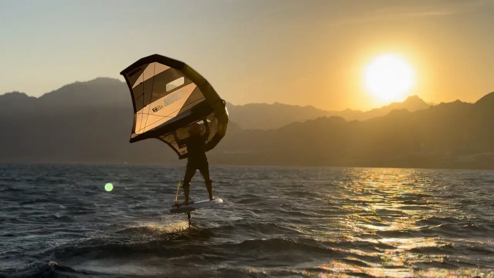
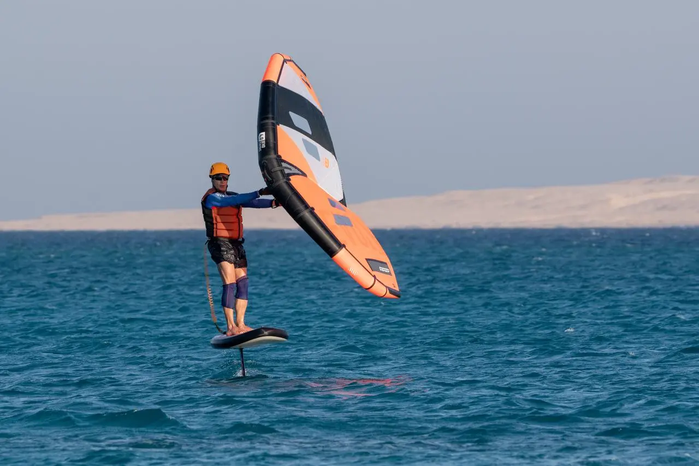
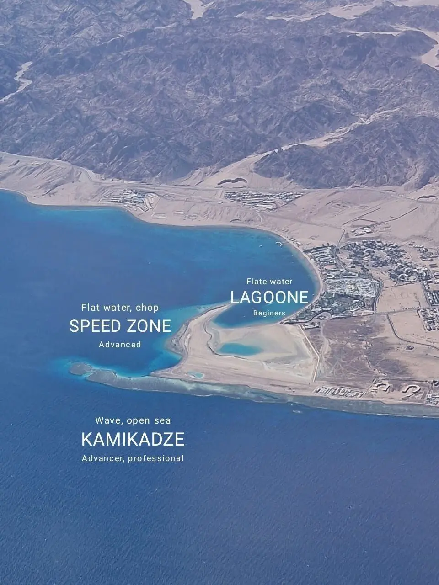
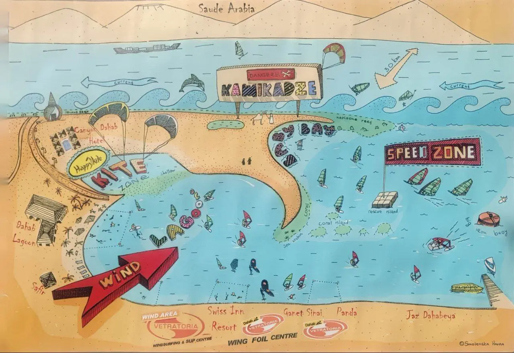
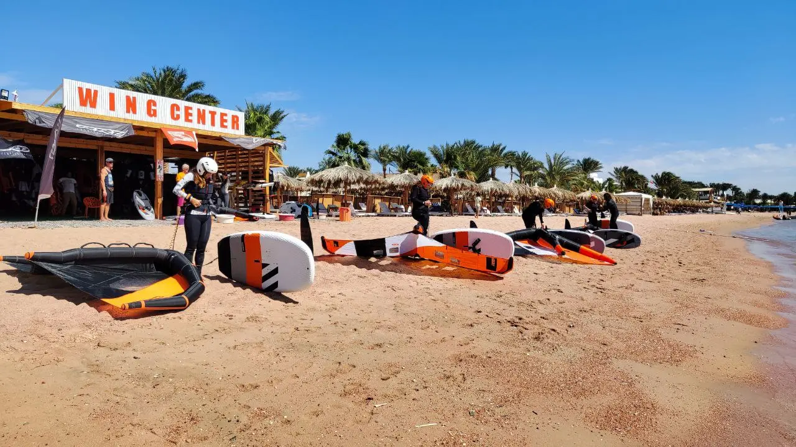
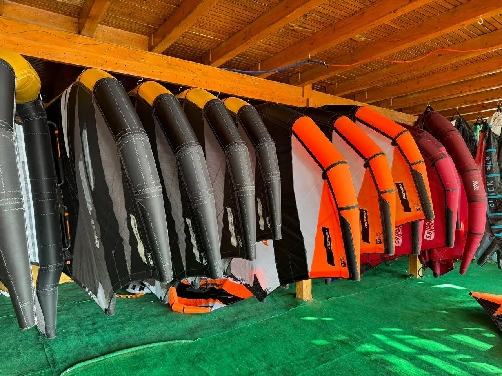
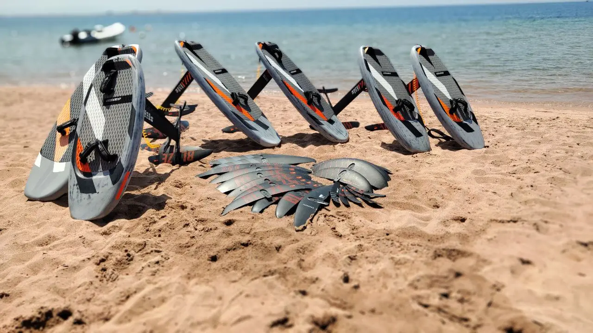
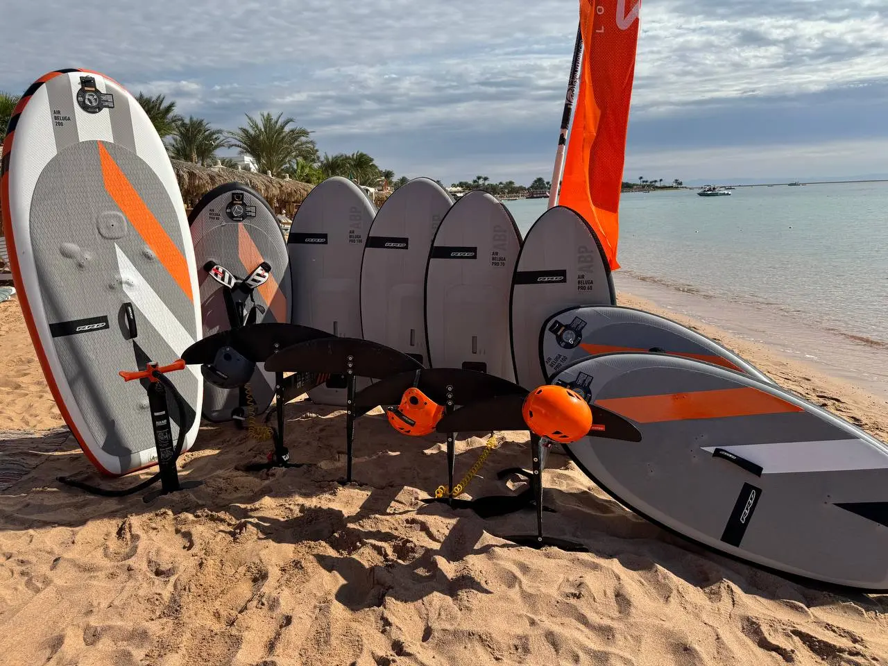
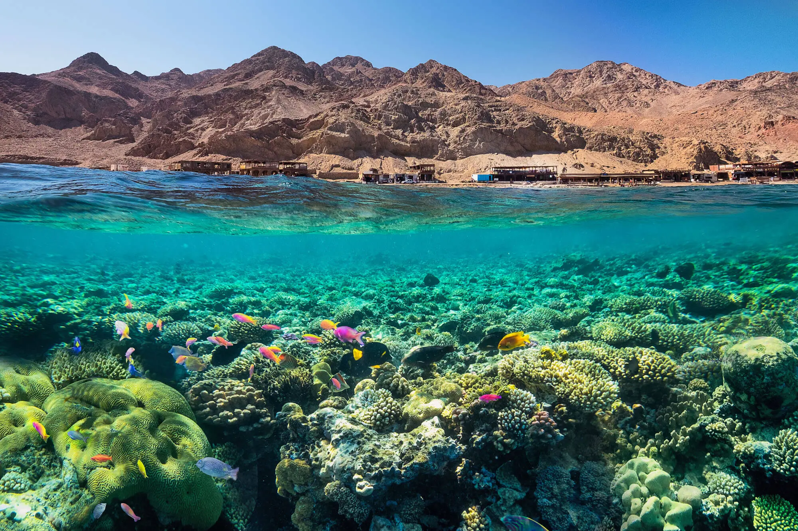
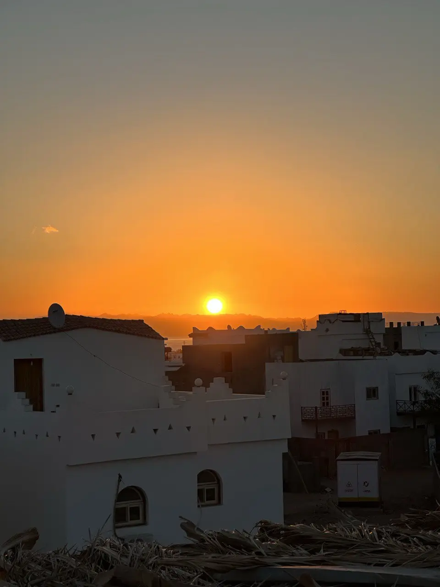

If you dream of flying over the water on a wingfoil, or you are already passionate about the sport, Dahab is where that passion turns into magic. It has everything you need for the perfect start and steady progress—from reliable wind to breathtaking scenery.
Wind you can rely on
Dahab is famous for its microclimate. The wind is steady and predictable throughout the year, averaging 15–25 knots—ideal conditions for wingfoiling.
For beginners
Lessons take place with boat support and on flat water, helping you learn without stress and progress safely.
For experienced riders
You can practise tricks on flat water or experiment with waves in the open sea.
There are almost no truly “dead” days here. Even without wind, you can enjoy freediving, diving, SUP, snorkelling and rock climbing in the mountains.


The lagoon—your safe training ground
Dahab has a huge lagoon where 99% of beginners learn. Even if it is your first time on a board, the conditions make it easy to feel confident.
Flat water
A smooth surface makes it easier to start, balance and control the wing.
Plenty of space
There are no crowds, so you can ride freely without getting in the way of other students.
Safe geography
If you get tired and cannot stand up, you will not be carried out to sea—the current will bring you back towards shore.
Three rescue boats
If the wind becomes too much or you run out of energy, the team will pick you up from the water.



Equipment and support
Wing Center Dahab has everything you need, so you can spend less time searching and more time riding.
Rental
Modern RRD equipment for every level—from your first lesson to independent riding.
Instructors
Experienced coaches who do more than teach the technique—they help you fall in love with the sport.
Repairs
If something breaks, your equipment can be repaired quickly and professionally.
Storage
You can leave your own equipment at the station instead of transporting it after every session.



More than a sport—an atmosphere
Dahab is more than a point on the map; it is a whole way of life. After your session, you will find:
A relaxed rhythm
Seafront cafés, seafood, unforgettable sunsets, board games, dancing and yoga.
Like-minded people
People who live for wind and freedom gather here. It is easy to find friends and mentors.
Nature
The Red Sea, the Sinai Mountains and the star-filled sky are impressive even when you are not on the water.


Dahab is where wingfoiling becomes more than a sport—it becomes a way of life. Here you will not only learn to fly, but also find your wind-loving community, draw inspiration from nature and want to return again and again.
Message us and make your first flight one to remember.